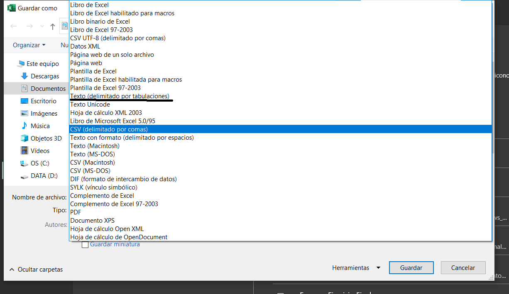

var_resp <- c(56.3, 30.2, 25.4, 30.2, 40.1, 22.3)
var_exp <- c(23.0, 41.1, 70.2, 30.0, 28.8, 30.1)Cargar tus datos a R es relativamente sencillo y es algo que harás muchas veces conforme utilices más y más R en distintos proyectos. Sin embargo, es un paso que puede costar bastante a los recién iniciados. Especialmente si vienen del curso de estadística, necesitan tener esto claro si no quieren perder tiempo en el parcial.
Ejemplo 1
Imagina que en el parcial te piden hacer un modelo con una base de datos así:
Cargar datos manual desde R
Hay que recordar que para R las columnas son variables y las filas observaciones. Así que lo que necesitaremos es tener dos columnas para hacer el modelo que nos piden. Como ya vimos antes lo podemos lograr de diferentes maneras. Vamos a poner aprueba lo aprendido y primero generemos los vectores
1- Podemos usar las funciones que vimos para combinar columnas (cbind)
(parcial1 <- cbind(var_resp, var_exp) ) var_resp var_exp
[1,] 56.3 23.0
[2,] 30.2 41.1
[3,] 25.4 70.2
[4,] 30.2 30.0
[5,] 40.1 28.8
[6,] 22.3 30.12- También podemos crear un dataframe con los dos vectores
(parcial2 <- data.frame(variable1= var_resp,
variable2= var_exp)) variable1 variable2
1 56.3 23.0
2 30.2 41.1
3 25.4 70.2
4 30.2 30.0
5 40.1 28.8
6 22.3 30.1Con cualquiera e estos objetos ya podemos construir un modelo lineal. Solo hay que tener cuidado con el nombre que le ponen a cada columna. Para estar seguros pueden usar la función names
names(parcial2)[1] "variable1" "variable2"lm(variable1~ variable2, data= parcial2)
Call:
lm(formula = variable1 ~ variable2, data = parcial2)
Coefficients:
(Intercept) variable2
48.0734 -0.3761 Ejemplo 2
Ahora nos piden hacer el análisis esta base de datos de 4 tratamientos:
Estoy seguro que ya sabrían hacerlo desde R, pero hay veces que no conviene digitar todo. O incluyo hay bases de datos que ya están en excel, entonces ¿cómo cargarlas en R?
Vamos a pasar la base a excel. Es tan sencillo como digitar todo en excel o copiar y pegar. Lo único importante es recordar que en R cada columna es una variable o en este caso, un tratamiento. Por lo tanto la base debería verse así:
Es importante que no exista celdas con datos adicionales, porque pueden aparecer en R cómo NAS.
Ahora vamos a guardar el archivo, pero lo vamos a guardar con una extensión determinada. Ya saben la ruta-> archivo -> Guardar como. Aquí tenemos dos opciones principales el .csv (comma separated values) separado por comas o .txt (text file format) delimitado por tabulaciones. Ambos son formatos mucho menos pesado que un libro de Excel y por lo tanto más sencillos de leer para R.

Es importante saber donde guardar tu archivo porque luego tienes que dar la ruta específica en R. Cómo yo uso proyectos es decir que mi carpeta es el directorio de trabajo, pero mi archivo esta dentro de la carpeta “posts” y luego dentro de otra que se llama “Cargar datos”
Delimitado por tabulador .txt
También deben saber que cada tipo de archivo requiere una función diferente. Por ejemplo el txt se lee con read.delim. En testa función simplemente le daremos la dirección del archivo en comillas, y separando cada carpeta con “/”. Hay que tener mucho cuidado con la extensión del archivo, es decir esta función solo cargará los archivos .txt
texto <- read.delim("tratamiento.txt")
texto Sin.sombra X10..Sombra X50..Sombra X100..Sombra
1 60.4 54.2 47.5 12.3
2 38.3 45.2 14.2 11.4
3 70.2 38.1 69.2 10.9
4 59.6 12.5 47.4 9.5Como verán R no lee muy bien caracteres extraños como porcentajes o espacios, por lo que no es recomendado usarlos. Noten, que por defecto R lee la primera fila como los títulos de cada columna.
Delimitado por comas .csv
Para cargar el csv hacemos lo mismo pero con read.csv
comas <- read.csv("tratamiento.csv")
comas Sin.sombra.10..Sombra.50..Sombra.100..Sombra
1 60.4;54.2;47.5;12.3
2 38.3;45.2;14.2;11.4
3 70.2;38.1;69.2;10.9
4 59.6;12.5;47.4;9.5Si lo notan, hay algo mal con la base de datos cuando cargo el csv. Las columnas no se separan bien. Esto sucede porque por defecto mi excel separa los csv con “;”. Podemos especificarle a R el separador con el argumento sep
comas2 <- read.csv("tratamiento.csv",
sep = ";")
comas2 Sin.sombra X10..Sombra X50..Sombra X100..Sombra
1 60.4 54.2 47.5 12.3
2 38.3 45.2 14.2 11.4
3 70.2 38.1 69.2 10.9
4 59.6 12.5 47.4 9.5Ahora si :D.
csv con readr
Las nuevas versiones de RStudio tienen una manera muy manual e interactiva de cargar archivos. Para usarla tenemos que instalar el paquete readr install.packages("readr"). Una vez instalados vamos a ir a la pestaña de archivos (files) en la parte interior derecha (generalmente) de RStudio. Ahora damos click en el archivo de tratamiento.csv
Al dar click se desplegaran unas opciones y la daremos de nuevo click en import Dataset. Se abrirá una ventana donde aparece la previsualización de los datos y en la esquina inferior, el código para cargarlo. Note que la función usada es read_delim . En la zona inferior izquierda hay otras opciones, una de ellas es la del delimitador que como les dije en mi caso es “;”. Podemos darle en import o copiar y pegar el código, lo que prefieran.
Libro de excel
Si, existe la manera de cargar los datos directamente en excel con el paquete readxl. Es un paquete bastante potente y la función read_excel funciona muy parecido a las que ya vimos. Por supuesto esta es una base sencilla por lo que no necesitamos especificar más argumentos. Conforme tengamos más pestañas o libros en excel, podemos especificarlo. Ya saben como ver la ayuda de las funciones entonces pueden explorar todas las opciones
#install.packages("readxl")
library(readxl)
excel <- read_excel("tratamiento.xlsx")
excel# A tibble: 4 × 4
`Sin sombra` `10% Sombra` `50% Sombra` `100% Sombra`
<dbl> <dbl> <dbl> <dbl>
1 60.4 54.2 47.5 12.3
2 38.3 45.2 14.2 11.4
3 70.2 38.1 69.2 10.9
4 59.6 12.5 47.4 9.5